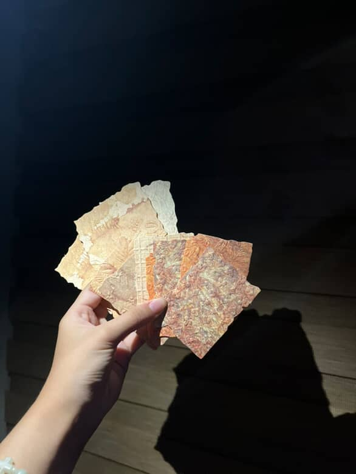

Hashtag: A New Wave of
Creativity and Sustainability.
It has arrived! Ms. Jamirah Nicole G. Bolledo a local artisan and founder of Likha Vintage Paper, has introduced a unique line of vintage papers craft projects made from garlic skins. Each sheet is carefully handcrafted to achieve an old-fashioned, elegant look, perfect for scrapbooking, and journaling. Ms. Jamirah shares, “I wanted every customer to feel a touch of nostalgia and authenticity while supporting eco-friendly craftsmanship.”
The Future is in The Likha!
According to Salik, et al., 2024 from a research (Garlic Peel as an Alternative Making Paper), a garlic peel can be a good sustainable paper, it has various advantages. Firstly, it is a sustainable and eco-friendly option. It reduces the demand for traditional paper products made from wood, helping to conserve forests and reduce deforestration. Not only it can benefit the environement by reducing deforestration and promoting sustainability. It can also benefit local communities by providing them with an additional source of income as they can sell or use the garlic peel for paper production. Furthermore, it can also benefit artists and crafters as they can use the garlic paper for various projects, adding a distinct aesthetic value through its unique texture and color.
The Likha Vintage Paper is just starting but the key for a good paper industry and good future of the environment is here and coming!
